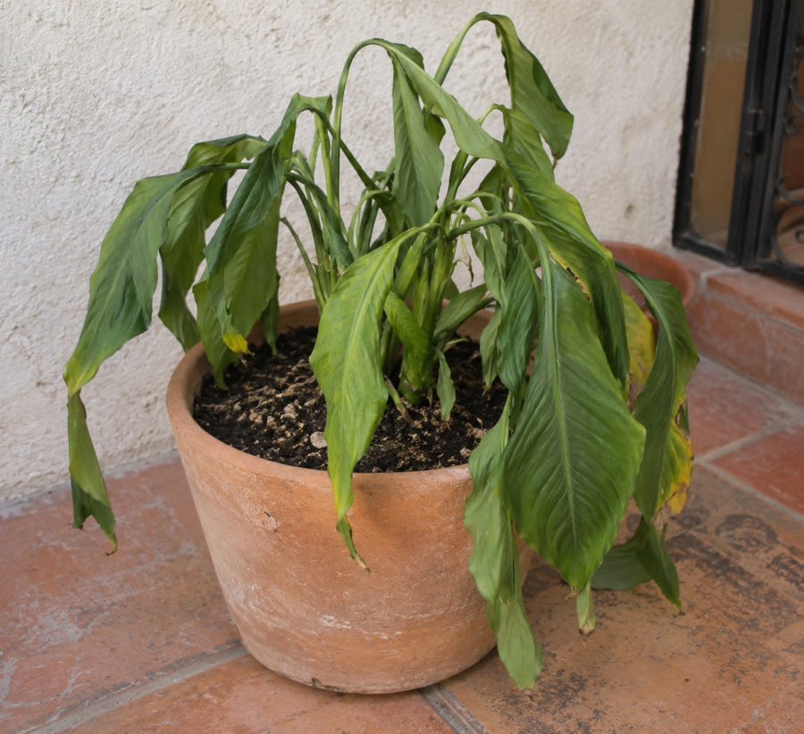
01
La planta se debilita
Agua, raíces, luz y nutrición trabajan juntas. Mirar solo una señal puede confundir.
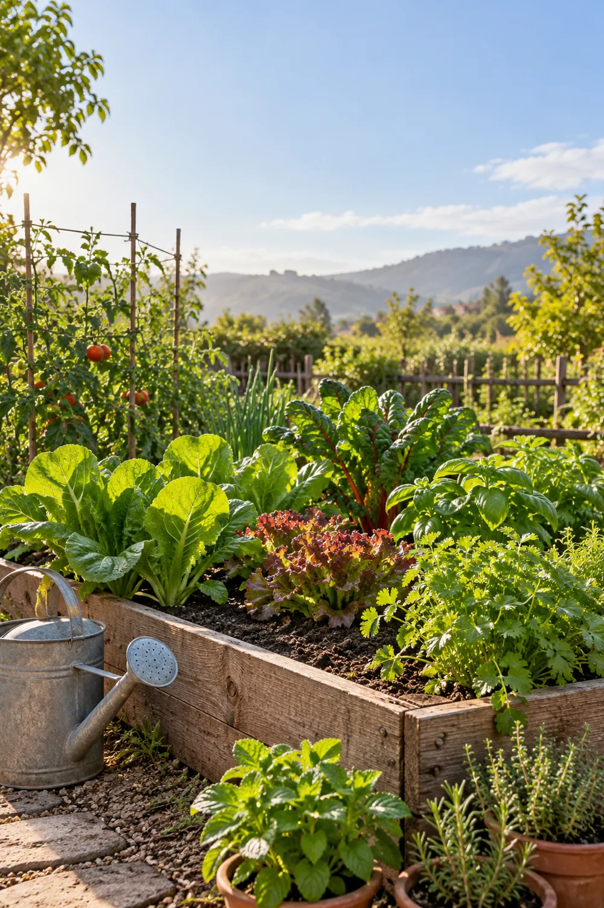
🌱 MI JARDÍN VIVO PRESENTA
Aprende cómo favorecer su crecimiento, conseguir una floración más saludable y mejorar el cuidado de tus árboles frutales.
Con materiales sencillos, explicaciones paso a paso y un método que puedes aprender desde casa.
Tal vez ya te pasó
Riegas, cambias la maceta y pruebas consejos. Aun así, algunas plantas pierden color, no florecen o producen poco. El problema no siempre es falta de cuidado: muchas veces falta una explicación clara.

Agua, raíces, luz y nutrición trabajan juntas. Mirar solo una señal puede confundir.
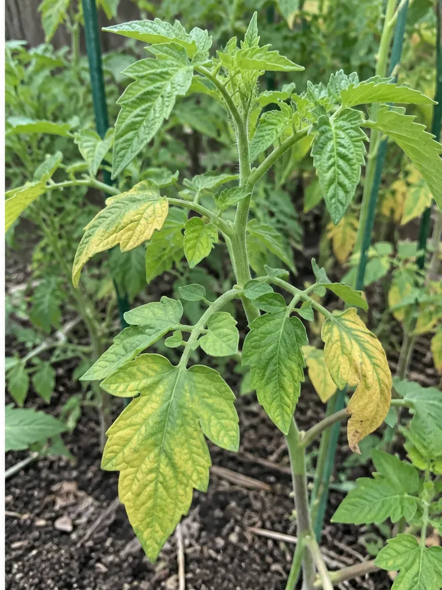
El amarilleo tiene varias causas. Observar la posición y el estado del suelo ayuda a investigar.
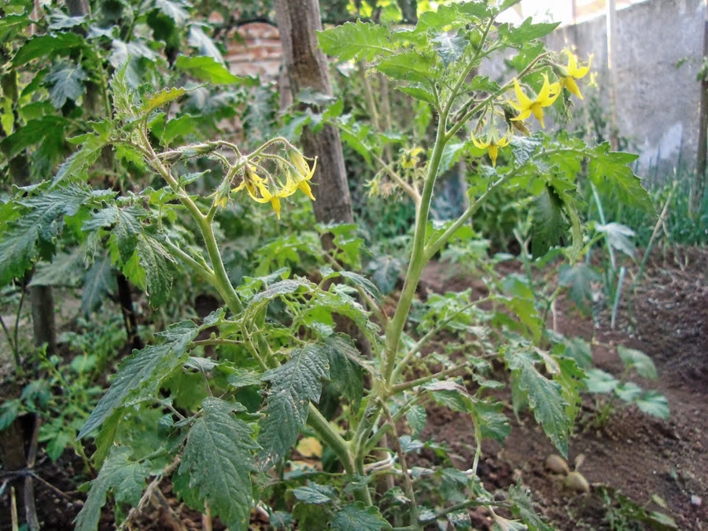
La etapa de la planta, el ambiente y el equilibrio de nutrientes influyen en cada proceso.
Comprender antes de aplicar
Las raíces necesitan agua, aire y un suelo funcional. La luz aporta energía. Los nutrientes participan en la formación de hojas, raíces, flores y frutos. Cuando una condición limita a la planta, añadir más material no siempre resuelve el problema.
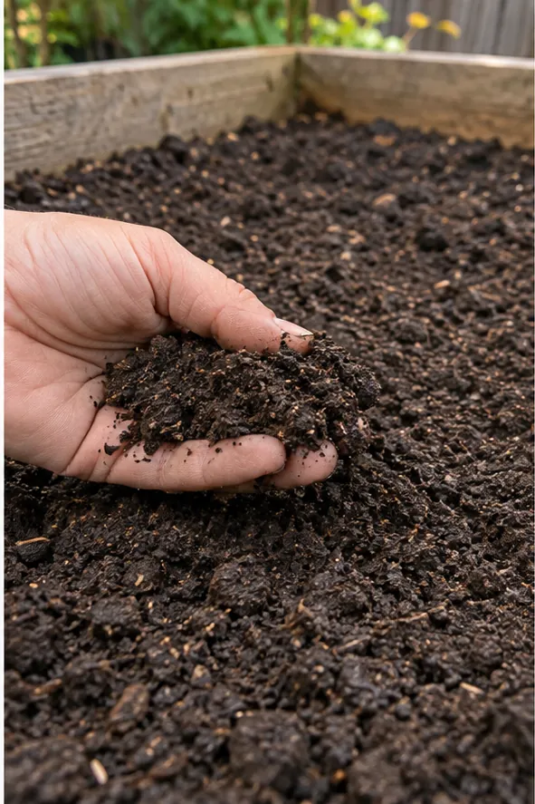
Tres letras, funciones diferentes
N, P y K representan nutrientes importantes. No son una promesa de resultados: son una forma de comprender funciones y tomar decisiones más informadas.
Participa en el crecimiento de hojas y tallos. Un exceso también puede generar demasiado follaje.
Interviene en procesos de energía, raíces y desarrollo reproductivo. Su disponibilidad depende del suelo.
Contribuye al equilibrio de agua y a diferentes funciones de la planta durante su desarrollo.
Una mezcla doméstica no posee una concentración NPK garantizada. La disponibilidad cambia según los materiales, el suelo y las condiciones de cultivo.
Materiales conocidos, instrucciones precisas
El método organiza una proporción educativa con materiales accesibles, siempre acompañada de revisión, prueba pequeña y observación.
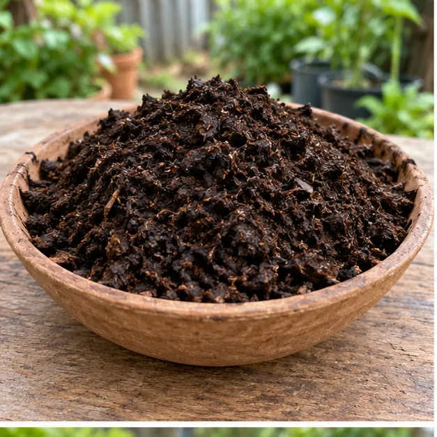
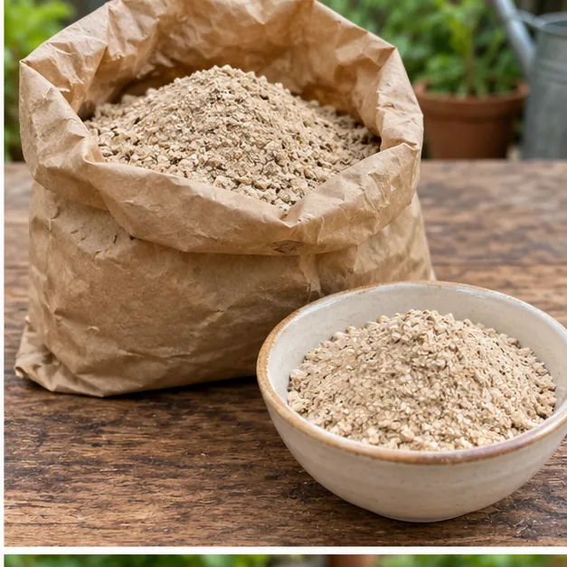
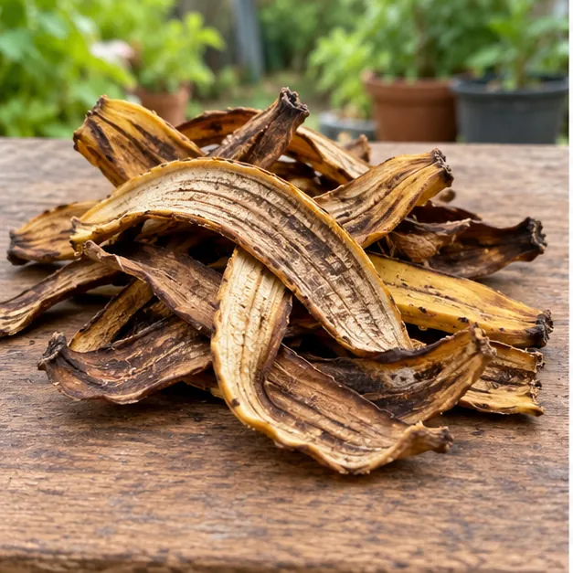
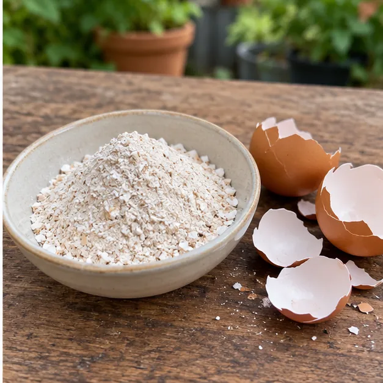
Un método que acompaña
El contenido avanza en un orden sencillo para que puedas entender qué hacer y, especialmente, cuándo conviene esperar.
Reconoce el suelo, las hojas y las señales que deben revisarse antes de aplicar una mezcla.
Sigue medidas visuales, conserva los ingredientes secos y descarta cualquier material con moho u olor anormal.
Haz una prueba pequeña cuando las condiciones sean adecuadas y registra los cambios con calma.
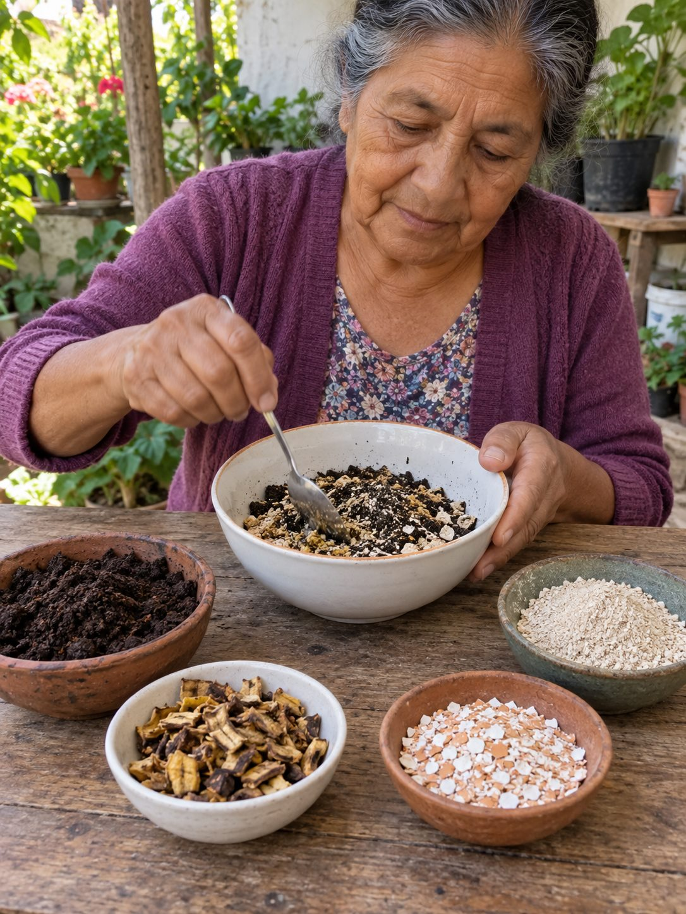
Imagina cuidar con más claridad
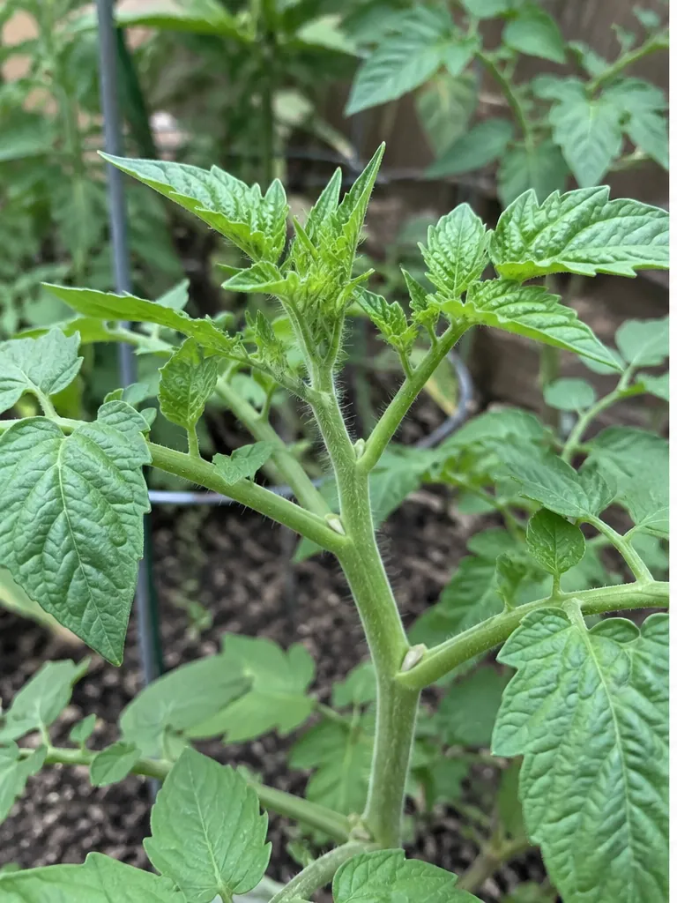
Aprende a observar el crecimiento nuevo sin exigir que las hojas antiguas recuperen su aspecto.

Organiza cuidados sencillos para hortalizas, respetando las necesidades de cada cultivo.
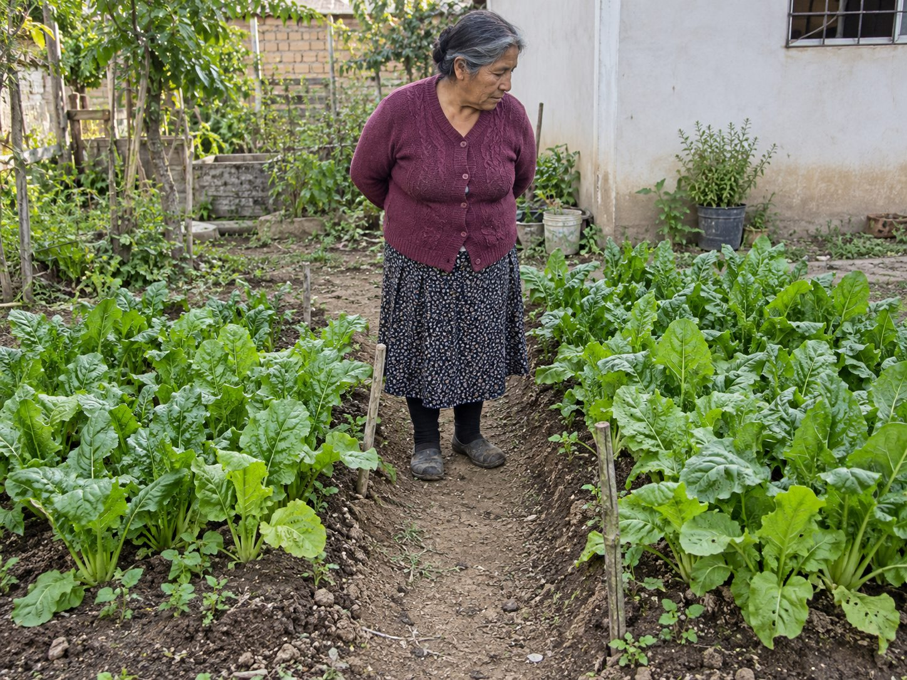
Registra una zona de prueba y compárala sin fabricar un “antes y después”.
Por qué existe Mi Jardín Vivo
Mi Jardín Vivo fue organizado para personas que aman sus plantas, pero se cansaron de consejos contradictorios. Cada explicación busca convertir la curiosidad en una acción sencilla: mirar, preparar, cuidar y volver a observar.
“No necesitas memorizar palabras difíciles. Necesitas comprender qué estás mirando y cuál es el próximo paso prudente.”
El producto real
Accede desde tu celular a explicaciones claras, pasos visuales y contenido organizado para cuidar mejor tus plantas a tu ritmo.
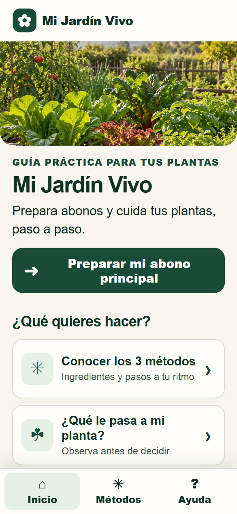
RESULTADOS REALES
Historias de personas que empezaron a entender mejor sus plantas, mejorar su cultivo y recuperar flores, frutos y color en casa.
🌸 EXPERIENCIA COMPARTIDA
Cuida flores y plantas en casa
“Llevaba años cuidando mis flores sin conseguir buenos resultados. Con el Método NPK aprendí a cuidarlas mejor y todo fue mucho más sencillo.”
🥑 EXPERIENCIA COMPARTIDA
Cultiva en su patio hace años
“Siempre tuve árboles frutales en casa, pero producían muy poco. El Método NPK me enseñó cosas que nunca había tenido en cuenta.”
🌿 EXPERIENCIA COMPARTIDA
Tiene plantas en macetas y jardín
“Mis plantas perdían color y se veían débiles. Aprendí cuidados sencillos y ahora sé mucho mejor qué necesitan. ¡Me encantó!”
Acceso digital completo
Aprende desde tu celular, a tu ritmo y con explicaciones sencillas.
Pensábamos lanzar este acceso por $47 USD.
Pero decidimos presentarlo con una oferta especial de lanzamiento.
Hoy puedes acceder por solo $10 USD ¡QUIERO MI MÉTODO NPK POR SOLO $10!Respuestas claras
Dentro de Mi Jardín Vivo
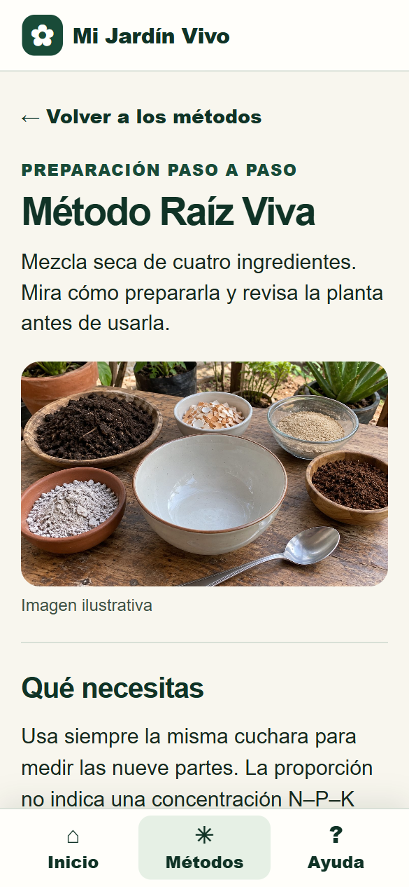
Abre una lección y avanza cuando estés listo.
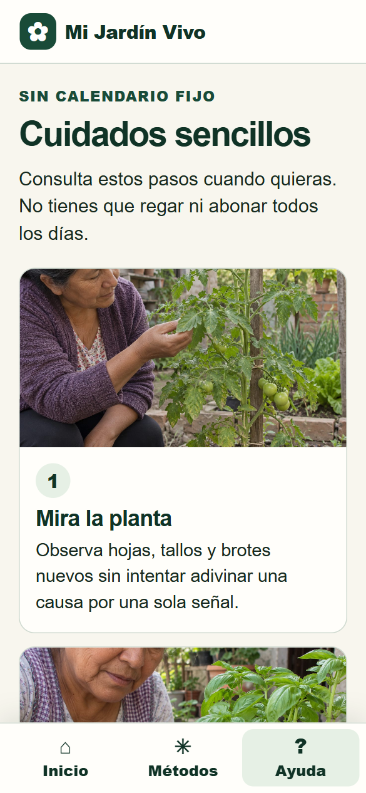
Texto grande, fotografías y decisiones sencillas.
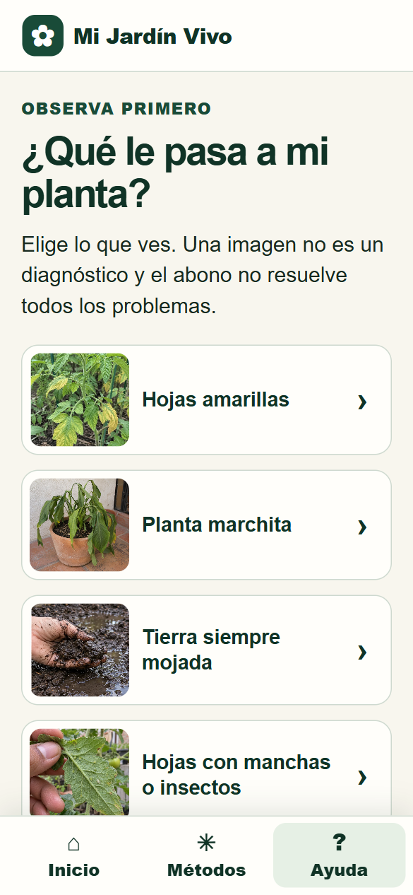
Consulta el contenido directamente en el navegador.
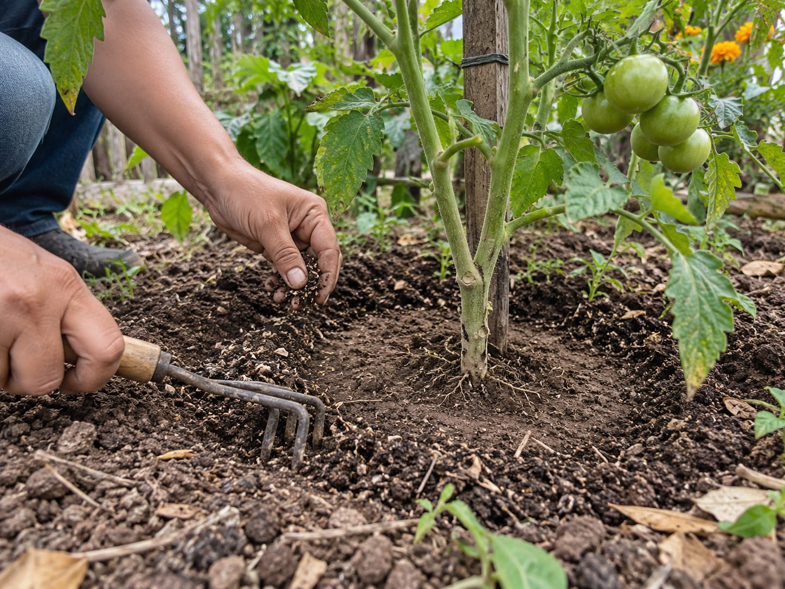
Observa, prueba en pequeño y adapta el cuidado a cada planta.
No necesitas saberlo todo sobre jardinería. Necesitas una guía que te explique por dónde comenzar.
Una nueva forma de cuidar
Aprende a comprender mejor tus plantas y comienza a cuidarlas con instrucciones claras desde casa.
Acceso digital • Pago único • Sin mensualidades.